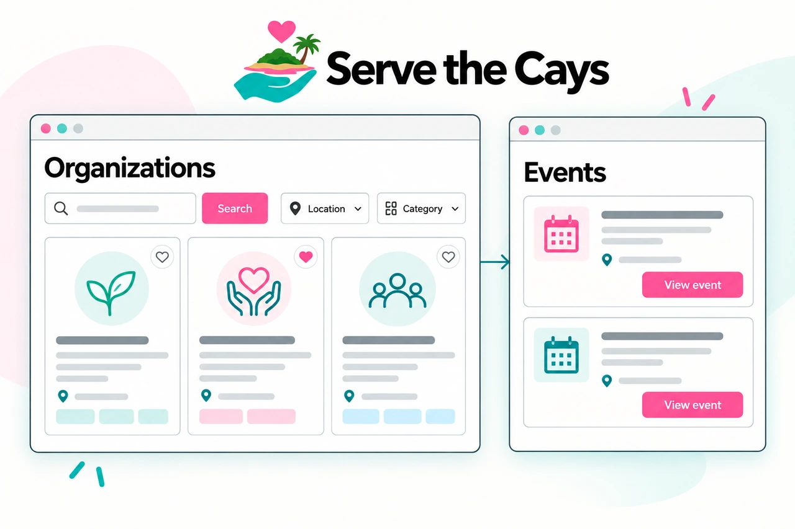

Community & volunteering
Serve the Cays
Giving back starts with knowing where to begin. I created Serve the Cays to bring Bahamian organizations, volunteer opportunities, and community events into one place.
I lead its design and development through Caynetic, with a simple goal: make it easier to find a cause and take part.
Visit Serve the Cays01 / Giving backThe Bahamas

Project illustration from Caynetic.